第 3 章 Start a Project
3.1 Project
以下在RStudio進行：
Start a new project
Step 1
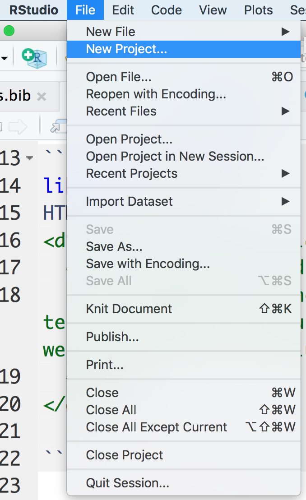Step 2

Step 3
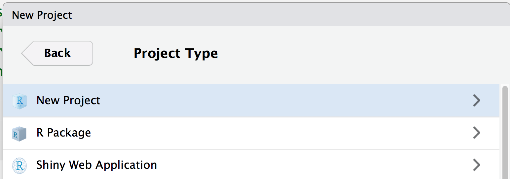Step 4
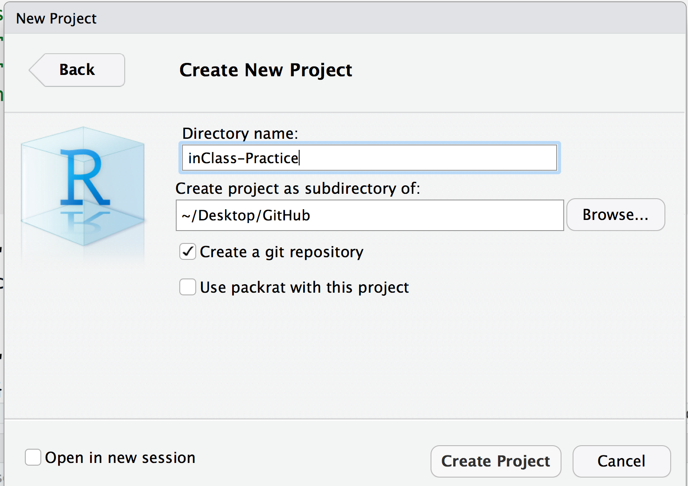
Here we check create a git repository.
- 避免中文路徑
Start a new file
Create a notebook: File–>New File–>R Notebook.
Title: “YYYY-MM-DD”
Click save: Name your file as YYYY-MM-DD
Step 1
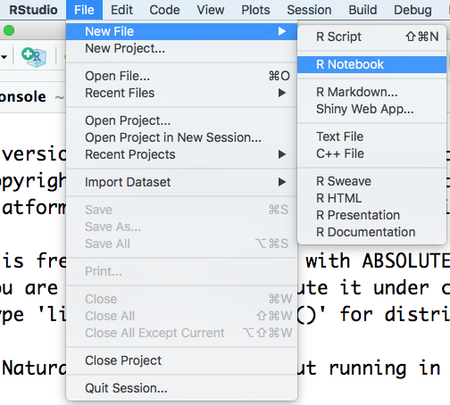Step 2
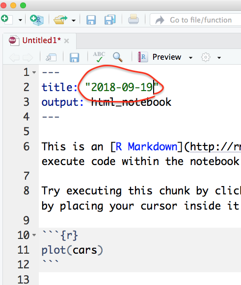Step 3
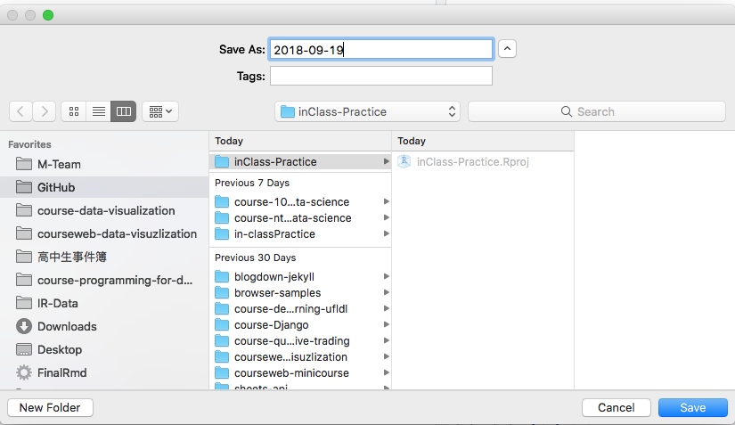- 避免中文檔名
3.2 GitHub Desktop
以下在GitHub Desktop進行：
Publish repository
Step 1
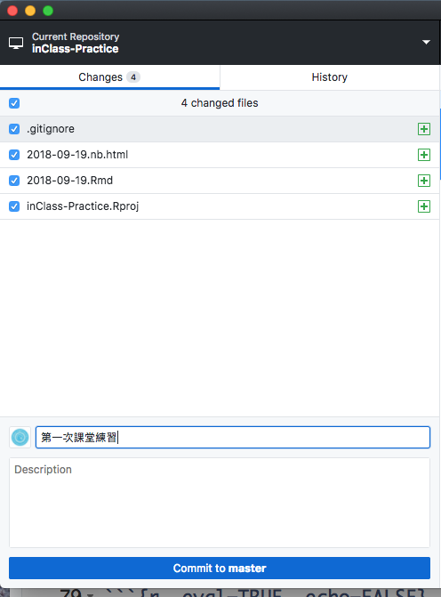Step 2
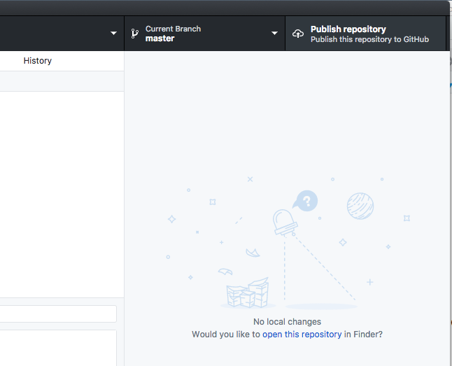Step 3
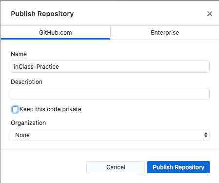Step 1
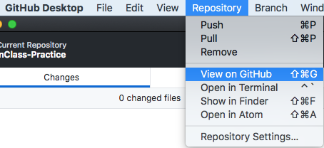Step 2
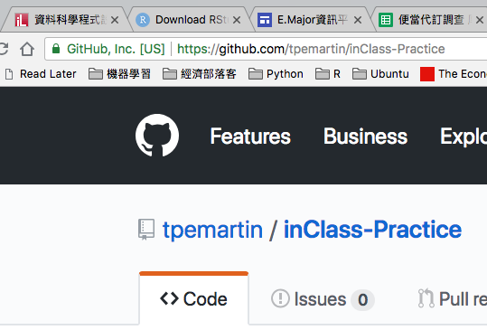Step 3
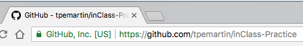From View on GitHub, you will see your repository (i.e. project) URL as https://github.com/{username}/{repo name}.
往後的課堂練習同學請固定使用該repo。
請到以下表單填寫你的課堂練習repo資訊。 http://bit.ly/2D0e0qt